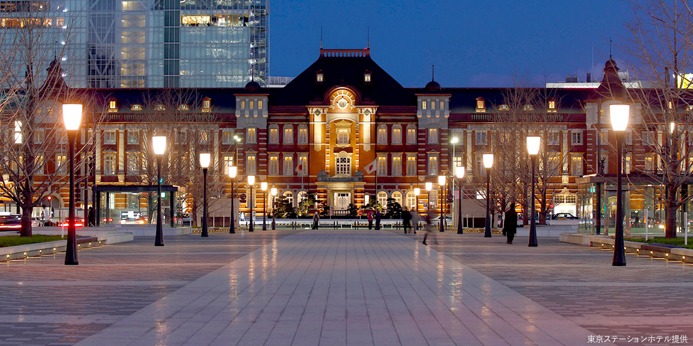
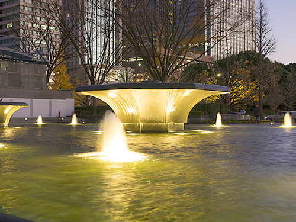
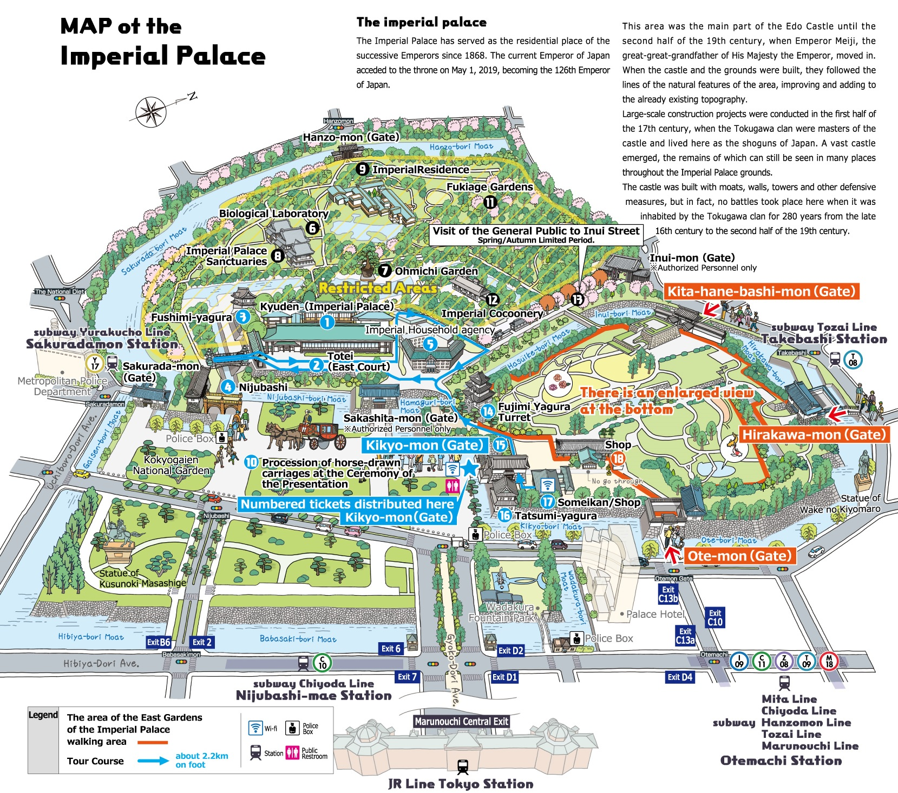
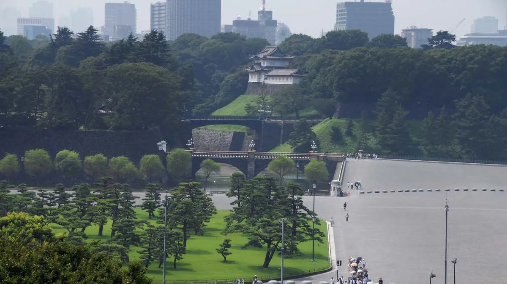
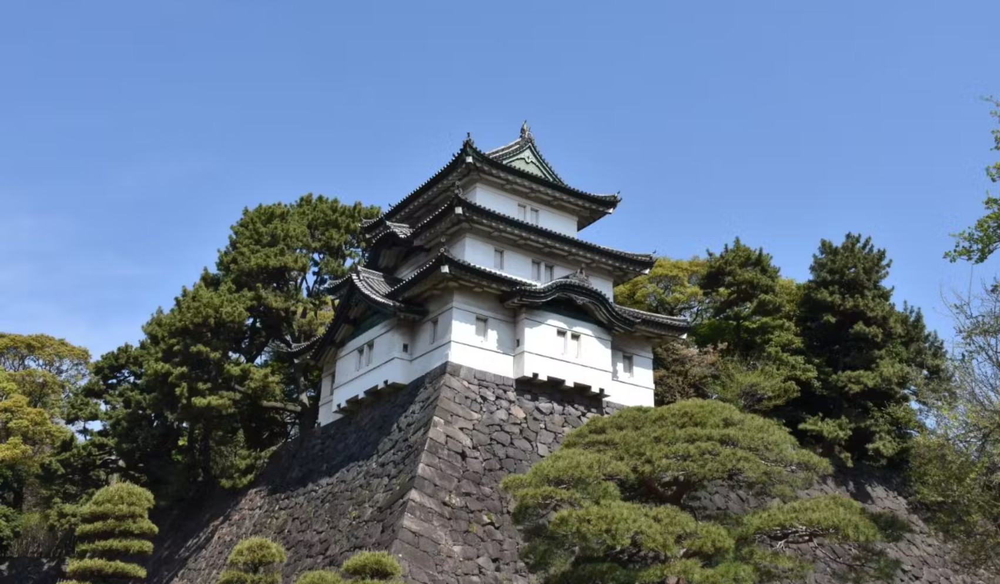
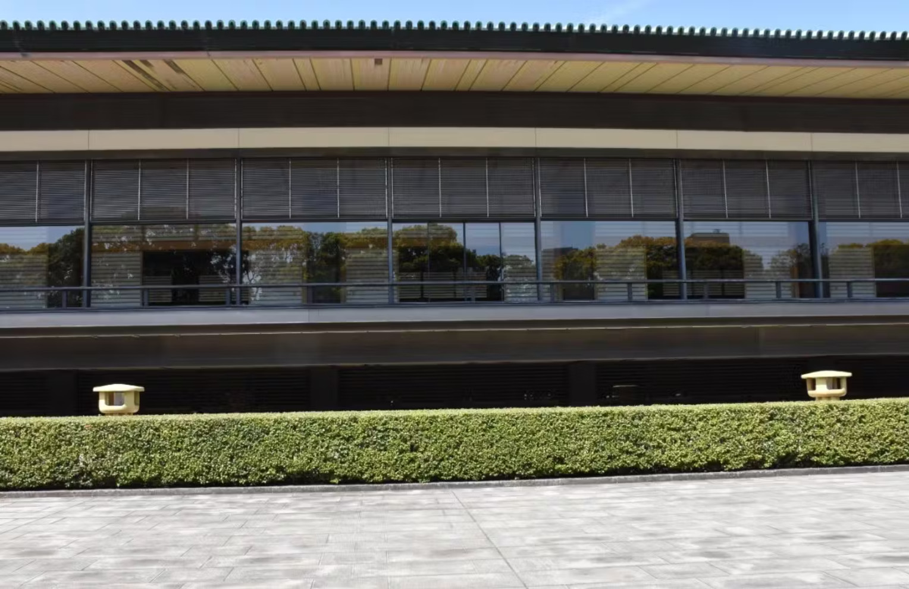

Tokyo Station is a must-see spot. As the departure station for the Shinkansen, it is a large station. The surroundings of the station offer beautiful scenery, blending modern skyscrapers with lush greenery.
A 15-minute walk will take you to the expansive Imperial Palace.
Tokyo Station, which opened in December 1914, has a history of over 100 years. Designed by Kingo Tatsuno, the father of modern Japanese architecture, the "Tokyo Station Red Brick Building" stretches approximately 335 meters from north to south, resembling outspread wings. A walk around it reveals beautiful office buildings and commercial facilities.
The area around Tokyo Station has beautiful streets, perfect for taking photos. Marunouchi Naka-dori is the main street among them. The cobblestone pavement and street trees are beautiful, and the street is lined with luxury brand stores and cafes. With many artistic objects, you might feel like you are walking in a foreign country.
KITTE is a commercial facility that partially preserves and redevelops the former Tokyo Central Post Office building. Even if you don't shop, it's worth entering. You can see exhibits for free inside. Operated jointly by Japan Post and the University of Tokyo's General Research Museum, it displays academic specimens and research materials accumulated by the University of Tokyo over about 140 years since its founding.
The rooftop garden "KITTE Garden" on the 6th floor is rich in greenery and offers one of the best views in the Marunouchi area.
A 7-minute walk from the Marunouchi Central Exit of Tokyo Station towards the Imperial Palace will bring you to Wadakura Fountain Park. The large fountain, established in 1995 to commemorate the wedding of the Crown Prince and Crown Princess, is a must-see. There are also water monuments and a monument inscribed with a poem by the Emperor Emeritus. The park is illuminated at night, offering a different, fantastical view compared to the daytime.
A 15-minute walk from Tokyo Station along Gyoko-dori will bring you to the "Outer Gardens of the Imperial Palace." Here, you can see a large lawn area dotted with pine trees. There are historical structures such as the moats that retain the atmosphere of Edo Castle, gates like "Sakuradamon," the symbol of the Imperial Palace "Nijubashi," and the bronze statue of Masashige Kusunoki.
 The Imperial Palace is enjoyable to visit on a regular tour, but if you want to see the interior in detail, joining the "Imperial Palace General Tour Course" is recommended.
【Spot Details】
Name: Imperial Palace Tour
Meeting Place: Imperial Palace Kikyomon Gate
Capacity: 【Same-day Registration】 300 people per session (first-come, first-served, distribution of tickets)
【Advance Application】 200 people per session
※ Minors under 18 must be accompanied by an adult. For middle school students and above, if there is an application from the school, up to 9 people can participate.
Time: 【Morning Session】
9:00 - Ticket distribution
9:30 - Registration starts
10:00 - Tour starts
11:15 - Tour ends
【Afternoon Session】
12:30 - Ticket distribution
13:00 - Registration starts
13:30 - Tour starts
14:45 - Tour ends
※ Items to bring: Please bring an ID that can verify your identity (driver's license, My Number card, passport, residence card, health insurance card, etc.) (※ Copies are not accepted)
※ For same-day registration: Bring an ID that can verify your identity and gather in front of the Kikyomon Gate of the Imperial Palace. Tickets will be distributed starting one hour before the tour starts. After entering, fill out the tour application form.
※ For advance application: Apply from the "Tour Application" on the tour guide website. Complete the application process from 5:00 on the 1st of the month before the desired tour date to 4 days before the desired date.
Official Website: https://www.kunaicho.go.jp/event/sankan/sankaninfo.html
On the day of the tour, get your tour ticket at Kikyomon Gate. Normally, this gate is not accessible, but participants of the Imperial Palace General Tour Course can enter through here.
First, proceed along the path beside Kikyomon Gate. You will discover a small castle-like building along the curved path! This is the Fujimi Yagura, built at the southern corner of the main keep of Edo Castle during the Edo period.
Have you ever seen the Emperor and Empress waving on TV during the New Year's General Audience or the Emperor's Birthday General Audience? This place is the "Kyuden Totei" (East Garden of the Imperial Palace). On these general audience days, anyone can pass through the main gate of the Imperial Palace and see the Emperor and Empress from this spot. This plaza can accommodate up to 20,000 people at once.

 日本語
日本語
 简体中文
简体中文